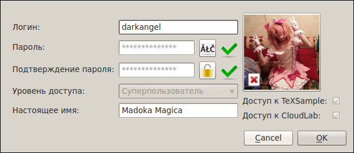

[Назад: 1.2 Настройки]
[Далее: 1.4. Поиск и заргузка лабораторных работ]
Управление аккаунтом
Уже после регистрации вы можете менять некоторую информацию, относящуюся к вашему аккаунту. Для этого в меню
"CloudLab" выберите пункт "Инструменты", а в нем - пункт "Управление аккаунтом...".
Появится форма следующего вида:

На форме отображается ваш логин, уровень доступа, а также перечисляются сервисы, к которым вы имеете доступ (справа
внизу, под аватаром). Если вы имеете доступ к сервису, то напротив него стоит галочка. Вышеперечисленную информацию
изменять нельзя, однако можно сменить пароль, настоящее имя и аватар (последний можно просто сбросить, то есть удалить
с сервера, нажав маленькую кнопку с изображением крестика). Для подтверждения изменений необходимо нажать кнопку
"ОК".
[Назад: 1.2 Настройки]
[Далее: 1.4. Поиск и заргузка лабораторных работ]